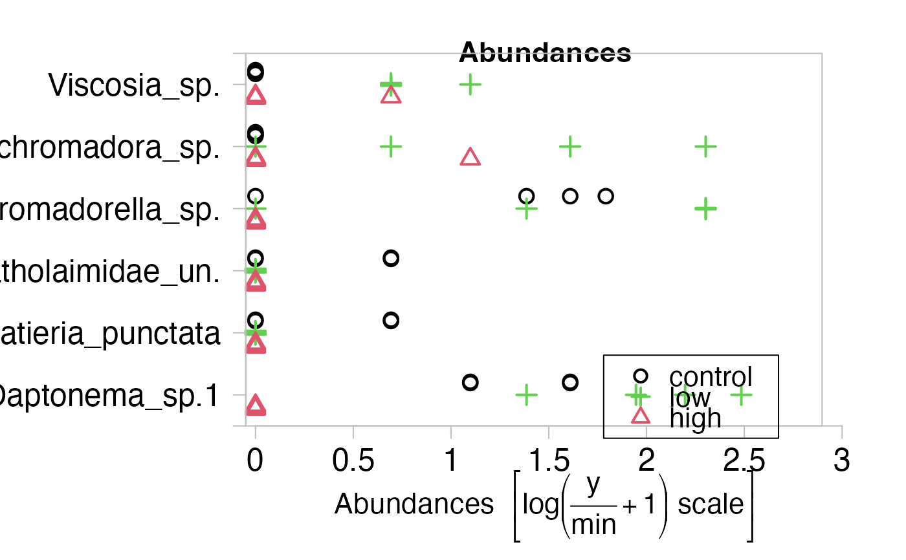
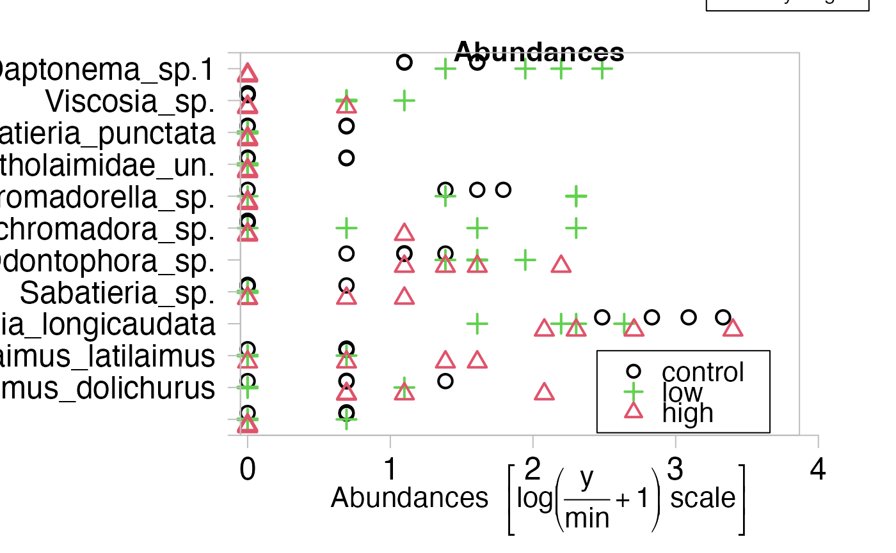
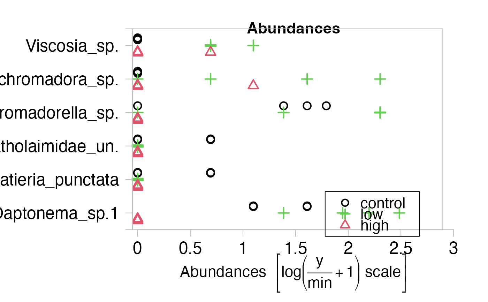
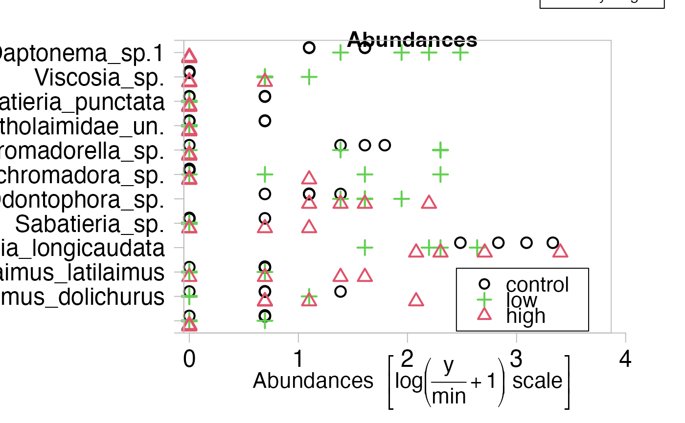

Plot Multivariate Abundance Data and Formulae
plot.mvabund.RdProduces a range of plots for visualising multivariate abundance data and its relationship to environmental variables, including: dot-plots and boxplots for different levels of a factor stacked by response variable; comparative dot-plots and boxplots for different levels of a factor, stacked by response variable; scatterplots of abundances against a set of explanatory variables; scatterplots of pair-wise abundance data, e.g. from repeated measures. See details below.
Usage
# S3 method for mvabund
plot(x, y, type="p", overall.main="", n.vars=12,
var.subset=NA, transformation="log", ...)
# S3 method for mvformula
plot(x,y=NA, type="p", var.subset=NA,
n.vars= if(any(is.na(list(var.subset)))) 12 else length(var.subset),
xvar.select=TRUE, xvar.subset = NA, n.xvars=NA, transformation="log", ...)Arguments
- x
for the
mvabundmethod, x is amvabundobject.
For themvformulamethod, x is amvformulaobject, a Model Formula to be used.- y
in
plot.mvabundan optional second matrix with multivariate abundance data inplot.mvformulaan optional matrix of the independent variables to explain x.- type
what type of plot should be drawn. Useful types are "p" for scatterplot, "bx" for boxplot and "n" for no plot. Other types, see
plotare allowed, but usually don't give a meaningful output.- overall.main
a character to display as title for every window.
- var.subset
a numeric vector of indices indicating which variables of the mvabund.object should be included on the plot.
- n.vars
the number of variables to include in the plot.
- xvar.select
whether only a subset of x variables should be plotted or all.
- n.xvars
the number of the most relevant x variables that should be plotted, is not used if
xvar.select = FALSE. If NA it will be set to at most 3.- xvar.subset
a subset of x variables that should be plotted, is not used if
xvar.select = FALSE.- transformation
an optional transformation, if no formula is given, "no" = untransformed, "sqrt"=square root transformed, "log" (default)=log(Y/min+1) transformed, "sqrt4" =4th root transformed.
Note that ifplot.mvabundis called explicitly, and two data objects supplied, none of which is amvabundobject, thenplot.mvformulawill be called (See Details). The argumenttransformationis then NOT available.- ...
arguments to be passed to or from other methods.
Details
The function plot.mvabund produces plots for the visualisation of
multivariate abundance data and their relationships to environmental variables.
The approach taken is to separately plot the relationship between each response
variable and environmental
variables, that is, to visualise the marginal distribution, as in Warton (2008).
Three main types of plot that can be produced:
(1) Dot-plots or boxplots stacked along the y-axis by response variable. If a factor is given, comparative dot-plots/boxplots are produced, comparing abundances across each factor level. This type of plot is produced when one multivariate abundance dataset is given as an input argument, either on its own, or together with a factor, as in the examples using the solberg dataset below.
(2) Scatterplots of multivariate abundances against environmental variables, with separate plots for separate response variables. This type of plot is produced when one multivariate abundance dataset is given as an input argument together with an environmental variable or a set of environmental variables.
(3) Scatterplots of a paired sample of multivariate abundances. This type of plot is produced when two multivariate abundance datasets are given as input arguments, and their size and variable names match each other. It is up to the user to ensure that the rows match for these two datasets.
There are several methods for calling plot.mvabund:
(a) plot.mvabund("matrix", ...)
The multivariate abundances are stored
in the data matrix. Including an optional second argument determines
whether a plot of type (1) is produced (if no second argument or if it is a factor),
or a plot of type (2) (if one or a set of environmental variables is given), or a
plot of type (3) (if a second matching multivariate abundance dataset is given).
Instead of a matrix, mvabund objects can be used.
(b) plot("mvabund object", ...)
You can define mvabund objects using the function
mvabund. Then the behaviour of the plot function is the same as
plot.mvabund above.
(c) plot.mvformula("response"~"terms")
The first of these two objects must be the multivariate abundances, which can be
either a matrix or a mvabund object. The terms determine the type of
plot produced. The terms can be either a single vector or matrix or
a number of vectors or matrices, separated by +.
Compare formula for further details on the specification
of the terms.
(d) plot("mvformula object")
You can define mvformula objects using the function mvformula.
Note that the response cannot be a data frame object.
For plots of type (3) above, you must use method (a) or (b). Plot methods (c) and (d) require that both the response and explanatory variables are specified, i.e. formulas like '~x' or 'y~1' cannot be plotted.
See below examples to see how each of these methods is applied.
Multivariate abundance datasets typically have many variables,
more than can be visualised in a single window, so by default plot.mvabund
subsets abundance variables (and where appropriate, environmental variables).
By default the 12 most abundant variables are plotted (determined on transformed
variables if the response is transformed in the mvformula method),
although this setting can be controlled via the argument n.vars, and the
variables included in the subset to be plotted can be controlled via
var.subset. It is possible for example to plot the abundance variables
most significantly associated with an environmental variable,
as in the Solberg example below.
To produce boxplots rather than dot-plots in type (1) plots, use the argument
type="bx".
For type (2) plots, if only one environmental variable is specified, plots for
different abundance variables are arranged in a rectangular array (different
abundance variables in different rows and columns). If however more than one
environmental variable is specified, different columns correspond to different
environmental variables (and different abundance variables in different rows).
If more than 3 environmental variables are specified, the 3 will be selected
that maximise average R^2 when manylm is applied (using the subset
selection function best.r.sq). To switch off this subset selection, set
xvar.select=FALSE, or choose your own subset of environmental variables
using xvar.subset.
To control the appearance of points on dot-plots and scatterplots, usual
arguments apply (see par for details). The plotting symbols pch
and their color can be a vector, and if the plot function is called via
a mvformula object, it can also be a list, where the list elements corresponds
to the symbols / colors used in the plots for different
independent variables.
If some of the formula terms are factor variables, these will be drawn in
boxplots.
Note, that the plots produced by plot.mvformula
depend on whether the first independent variable is a factor or not.
See the examples for the different possibilities of boxplots that can be
produced.
If two objects are passed and only one of them is an mvabund object,
the resulting plots will be the same as if a formula was supplied, having the
mvabund object as response variable.
If both objects are not mvabund objects, it will be tried to guess which
one of them is the response. The following logic applies:
If y is not a data.frame, it will be assumed that y is the
response. Note that y is the second object, if argument names are not
supplied.
If y is a data.frame and x is not a data.frame,
it will be assumed that x is the response. If both objects are
data frames an error will result, as the function is designed for mvabund
objects!
The argument shift controls whether or not points are shifted on dotplots
so that they do not overlap. This argument is ignored for boxplots and
scatterplots (type (2) or type (3) graphs).
Warning
The argument log, that is available in lots of plotting functions can not
be used for plotting mvabund or mvformula objects. Instead use
transformation for the mvabund method and for the
mvformula method include any transformations in the formula.
References
Warton D.I. (2008). Raw data graphing: an informative but under-utilized tool for the analysis of multivariate abundances. Austral Ecology 33(3), 290-300.
Examples
require(graphics)
############################
## Some "type (1)" plots ##
############################
data(solberg)
solbdat <- solberg$abund
treatment<- solberg$x
## Plot a multivariate dataset (Species vs Abundance)
plot.mvabund(solbdat)
#> Kicking off BoxPlot sequence
#> Overlapping points were shifted along the y-axis to make them visible.
#>
#>
#> ABOUT TO PLOT THE FUNCTION
#>
#> Only the variables Halanonchus_sp., Terschellingia_longicaudata, Dorylaimopsis_punctatus, Marylynnia_complexa, Molgolaimus_sp., Aponema_torosa, Spirinia_parasitifera, Odontophora_sp., Daptonema_sp.1, Prochromadorella_sp., Halichoanolaimus_dolichurus, Sabatieria_longicaudata were included in the plot
#> (the variables with highest total abundance).
## Alternatively, the plot command could be used directly if spiddat is
## defined as an mvabund object:
solbmvabund <- mvabund(solbdat)
plot(solbmvabund)
#> Kicking off BoxPlot sequence
#> Overlapping points were shifted along the y-axis to make them visible.
#>
#>
#> ABOUT TO PLOT THE FUNCTION
#>
#> Only the variables Halanonchus_sp., Terschellingia_longicaudata, Dorylaimopsis_punctatus, Marylynnia_complexa, Molgolaimus_sp., Aponema_torosa, Spirinia_parasitifera, Odontophora_sp., Daptonema_sp.1, Prochromadorella_sp., Halichoanolaimus_dolichurus, Sabatieria_longicaudata were included in the plot
#> (the variables with highest total abundance).
 ## Draw an mvabund object in a boxplot, but using the 20 most abundant
## variables in the plot, using the square root transform, and adding
## coloured axes and title:
plot.mvabund(solbdat, n.vars=20, type="bx", transformation="sqrt",
fg="lightblue", main="Solberg abundances", col.main="red")
#> Kicking off BoxPlot sequence
#> Only the variables Halanonchus_sp., Terschellingia_longicaudata, Dorylaimopsis_punctatus, Marylynnia_complexa, Molgolaimus_sp., Aponema_torosa, Spirinia_parasitifera, Odontophora_sp., Daptonema_sp.1, Prochromadorella_sp., Halichoanolaimus_dolichurus, Sabatieria_longicaudata, Dichromadora_sp., Neochromadora_sp., Richtersia_inaequalis, Pandolaimus_latilaimus, Leptolaimus_elegans, Halalaimus_sp., Desmolaimus_sp., Linhomieidae_un.A were included in the plot
#> (the variables with highest total abundance).
## Plot Species (split by treatment) vs Abundance
plot(solbmvabund,treatment)
#> Overlapping points were shifted along the y-axis to make them visible.
#>
#> PIPING TO 1st MVFACTOR
#> Only the variables Halanonchus_sp., Terschellingia_longicaudata, Dorylaimopsis_punctatus, Marylynnia_complexa, Molgolaimus_sp., Aponema_torosa, Spirinia_parasitifera, Odontophora_sp., Daptonema_sp.1, Prochromadorella_sp., Halichoanolaimus_dolichurus, Sabatieria_longicaudata were included in the plot
#> (the variables with highest total abundance).
## This can also be produced using
plot(solbmvabund~treatment)
#> Overlapping points were shifted along the y-axis to make them visible.
#>
#> PIPING TO 2nd MVFACTOR
#> Only the variables Halanonchus_sp., Terschellingia_longicaudata, Dorylaimopsis_punctatus, Marylynnia_complexa, Molgolaimus_sp., Aponema_torosa, Spirinia_parasitifera, Odontophora_sp., Daptonema_sp.1, Prochromadorella_sp., Halichoanolaimus_dolichurus, Sabatieria_longicaudata were included in the plot
#> (the variables with highest total abundance).
## To use plot.mvabund to plot only the variables with P-values less than 0.1:
lm.solberg <- manylm(log(solbmvabund+1)~treatment)
anova.solb <- anova(lm.solberg, p.uni="unadjusted")
pj = anova.solb$uni.p
plot(solbmvabund~treatment, var.subset=pj<0.1)
#> Overlapping points were shifted along the y-axis to make them visible.
#>
#> PIPING TO 2nd MVFACTOR
#> Only the variables Viscosia_sp., Dichromadora_sp., Prochromadorella_sp., Cyatholaimidae_un., Sabatieria_punctata, Daptonema_sp.1 were included in the plot (user selected).

## Or to plot only the 12 most significant variables, according to their
## univariate ANOVA P-values:
pj.sort = sort(pj, index.return=TRUE)
plot(solbmvabund~treatment, var.subset=pj.sort$ix[1:12])
#> Overlapping points were shifted along the y-axis to make them visible.
#>
#> PIPING TO 2nd MVFACTOR
#> Only the variables Daptonema_sp.1, Viscosia_sp., Sabatieria_punctata, Cyatholaimidae_un., Prochromadorella_sp., Dichromadora_sp., Odontophora_sp., Sabatieria_sp., Terschellingia_longicaudata, Pandolaimus_latilaimus, Halichoanolaimus_dolichurus, Sphaerolaimus_macrocirculus were included in the plot (user selected).
############################
## Some "type (2)" plots ##
############################
#load and convert data
data(spider)
spiddat <- mvabund(spider$abund)
spidx <- mvabund(spider$x)
#create labels vectors
pch.vec <- as.numeric(spidx[,3]<2)
pch.vec[pch.vec==0] <- 3
#Scale the soil water variable
soilWater <- spidx[,1]
#Create the Table for the main titles of each plot
title <- c("\n\nAlopecosa accentuata", "\n\nAlopecosa cuneata",
"\n\nAlopecosa fabrilis", "\n\nArctosa lutetiana",
"\n\nArctosa perita", "\n\nAulonia albimana",
"\n\nPardosa lugubris", "\n\nPardosa monticola",
"\n\nPardosa nigriceps", "\n\nPardosa pullata",
"\n\nTrochosa terricola", "\n\nZora spinimana")
#Plot Species Abundance vs Environmental variable
plot.mvformula(log(spiddat+1) ~ exp(soilWater), main=title,
xlab="% Soil Moist - Log Scale ", ylab="Abundance [log scale]",
overall.main="Species Abundance vs %Soil Moisture", col=pch.vec,
fg="grey", pch=pch.vec, las=1, scale.lab="ss",t.lab="o", mfrow=c(4,3),log="x")
#> Error in eval(predvars, data, env): object 'spiddat' not found
#Add a Margin
par(xpd=NA)
legend("topright",pch=c(1,3),col=c(1,3),legend = c("few twigs", "many twigs"),
cex = 1, inset=c(0,-0.19))

############################
## Some "type (3)" plots ##
############################
##Plot 1981 Abundance vs 1983 Abundance
data(tikus)
year <- tikus$x[,1]
tikusdat <- mvabund(tikus$abund)
site <- tikus$x[,2]
plot(tikusdat[year==81,], tikusdat[year==83,], col.main="blue",
xlab="1981 abundance", ylab="1983 abundance")
## Draw an mvabund object in a boxplot, but using the 20 most abundant
## variables in the plot, using the square root transform, and adding
## coloured axes and title:
plot.mvabund(solbdat, n.vars=20, type="bx", transformation="sqrt",
fg="lightblue", main="Solberg abundances", col.main="red")
#> Kicking off BoxPlot sequence
#> Only the variables Halanonchus_sp., Terschellingia_longicaudata, Dorylaimopsis_punctatus, Marylynnia_complexa, Molgolaimus_sp., Aponema_torosa, Spirinia_parasitifera, Odontophora_sp., Daptonema_sp.1, Prochromadorella_sp., Halichoanolaimus_dolichurus, Sabatieria_longicaudata, Dichromadora_sp., Neochromadora_sp., Richtersia_inaequalis, Pandolaimus_latilaimus, Leptolaimus_elegans, Halalaimus_sp., Desmolaimus_sp., Linhomieidae_un.A were included in the plot
#> (the variables with highest total abundance).
## Plot Species (split by treatment) vs Abundance
plot(solbmvabund,treatment)
#> Overlapping points were shifted along the y-axis to make them visible.
#>
#> PIPING TO 1st MVFACTOR
#> Only the variables Halanonchus_sp., Terschellingia_longicaudata, Dorylaimopsis_punctatus, Marylynnia_complexa, Molgolaimus_sp., Aponema_torosa, Spirinia_parasitifera, Odontophora_sp., Daptonema_sp.1, Prochromadorella_sp., Halichoanolaimus_dolichurus, Sabatieria_longicaudata were included in the plot
#> (the variables with highest total abundance).
## This can also be produced using
plot(solbmvabund~treatment)
#> Overlapping points were shifted along the y-axis to make them visible.
#>
#> PIPING TO 2nd MVFACTOR
#> Only the variables Halanonchus_sp., Terschellingia_longicaudata, Dorylaimopsis_punctatus, Marylynnia_complexa, Molgolaimus_sp., Aponema_torosa, Spirinia_parasitifera, Odontophora_sp., Daptonema_sp.1, Prochromadorella_sp., Halichoanolaimus_dolichurus, Sabatieria_longicaudata were included in the plot
#> (the variables with highest total abundance).
## To use plot.mvabund to plot only the variables with P-values less than 0.1:
lm.solberg <- manylm(log(solbmvabund+1)~treatment)
anova.solb <- anova(lm.solberg, p.uni="unadjusted")
pj = anova.solb$uni.p
plot(solbmvabund~treatment, var.subset=pj<0.1)
#> Overlapping points were shifted along the y-axis to make them visible.
#>
#> PIPING TO 2nd MVFACTOR
#> Only the variables Viscosia_sp., Dichromadora_sp., Prochromadorella_sp., Cyatholaimidae_un., Sabatieria_punctata, Daptonema_sp.1 were included in the plot (user selected).

## Or to plot only the 12 most significant variables, according to their
## univariate ANOVA P-values:
pj.sort = sort(pj, index.return=TRUE)
plot(solbmvabund~treatment, var.subset=pj.sort$ix[1:12])
#> Overlapping points were shifted along the y-axis to make them visible.
#>
#> PIPING TO 2nd MVFACTOR
#> Only the variables Daptonema_sp.1, Viscosia_sp., Sabatieria_punctata, Cyatholaimidae_un., Prochromadorella_sp., Dichromadora_sp., Odontophora_sp., Sabatieria_sp., Terschellingia_longicaudata, Pandolaimus_latilaimus, Halichoanolaimus_dolichurus, Sphaerolaimus_macrocirculus were included in the plot (user selected).
############################
## Some "type (2)" plots ##
############################
#load and convert data
data(spider)
spiddat <- mvabund(spider$abund)
spidx <- mvabund(spider$x)
#create labels vectors
pch.vec <- as.numeric(spidx[,3]<2)
pch.vec[pch.vec==0] <- 3
#Scale the soil water variable
soilWater <- spidx[,1]
#Create the Table for the main titles of each plot
title <- c("\n\nAlopecosa accentuata", "\n\nAlopecosa cuneata",
"\n\nAlopecosa fabrilis", "\n\nArctosa lutetiana",
"\n\nArctosa perita", "\n\nAulonia albimana",
"\n\nPardosa lugubris", "\n\nPardosa monticola",
"\n\nPardosa nigriceps", "\n\nPardosa pullata",
"\n\nTrochosa terricola", "\n\nZora spinimana")
#Plot Species Abundance vs Environmental variable
plot.mvformula(log(spiddat+1) ~ exp(soilWater), main=title,
xlab="% Soil Moist - Log Scale ", ylab="Abundance [log scale]",
overall.main="Species Abundance vs %Soil Moisture", col=pch.vec,
fg="grey", pch=pch.vec, las=1, scale.lab="ss",t.lab="o", mfrow=c(4,3),log="x")
#> Error in eval(predvars, data, env): object 'spiddat' not found
#Add a Margin
par(xpd=NA)
legend("topright",pch=c(1,3),col=c(1,3),legend = c("few twigs", "many twigs"),
cex = 1, inset=c(0,-0.19))

############################
## Some "type (3)" plots ##
############################
##Plot 1981 Abundance vs 1983 Abundance
data(tikus)
year <- tikus$x[,1]
tikusdat <- mvabund(tikus$abund)
site <- tikus$x[,2]
plot(tikusdat[year==81,], tikusdat[year==83,], col.main="blue",
xlab="1981 abundance", ylab="1983 abundance")